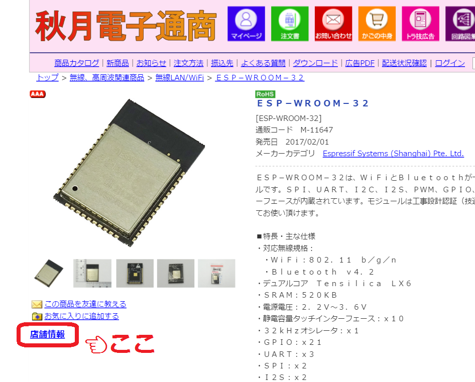

ESP-WROOM-32で秋月の売場表示
Tweet
まずはじめに
秋月の通販サイトが進化
少し前から，秋月の通販サイトで店舗の在庫数と売場の場所が見れるようになりました．
商品写真の下の「店舗情報」というボタンを押すとポップアップが現れ，在庫数と売場が表示されます．

ハイスペックなWiFiモジュールESP-WROOM-32

先日，ESP-WROOM-32というWiFiモジュールが発売されました．以前からあるESP-WROOM-02の進化版で，同じように使うことができます．しかし，スペックが圧倒的に高くなりました．
32bitマイコンで，240MHz動作，なんとデュアルコアです．電子工作の世界にもマルチコアがやってきました！！
作ったもの
【動画】通販コードから在庫数と棚番を表示
今回はそのESP-WROOM-32を使って，便利なグッズを作りました．
秋月の通販コードを入力すると，秋葉原店での在庫数と，売場番号が表示されます．
KERIESP32を使用
以前紹介したKERIESP32基板を使用して作りました．製作時間は3時間くらいです．
在庫と売場情報の取得方法
WiFi経由で秋月のサーバーに接続して，HTMLを入手し，それをパースして在庫数と売場を得ています．
普通のHTTPなので，とても簡単です．TCP/IPでサーバーに接続して，
GET /catalog/goods/warehouseinfo.aspx?goods=M-11647 HTTP/1.1\r\n
Host: akizukidenshi.com\r\n
Connection: close\r\n
\r\n
と送信すると，HTMLが返って来ます．
苦労したこと
文字コードがShift_JIS
今時どこもUTF-8だろうと思いこんでHTMLをパースしていたところ，日本語の検索が全く引っかかりませんでした．
しばらく悩んでいて，文字をバイナリで表示してUTF-8ではないことに気づき，HTMLのヘッダーを見たら，charasetがまさかのShift_JISになっていました…
windowsじゃないんだから…もう…
表記がバラバラ
今回は，キャラクタ液晶で作ったので日本語が表示できません．なので，売場を英数字で表す必要があります．
それなのに，「1F 01 売場」や「1F 売場 01」，「1F 13 売場キャビネット上段」など，表記がバラバラで，そこから棚番や段数だけを抽出するのはなかなか大変でした．データーベースに直接アクセスしたいですね…
バックヤードにしかない商品もある
バックヤードにしかない商品は「お問い合わせください」という売場名になっていました．このままだと日本語で表示できないので，「backyard」としました．
存在しない通販コードを検索すると，空白のHTMLが返ってくる
謎仕様です．「Not Found」としました．
まとめ
ESP-WROOM-32で何か作れないか！と考えていたところ，これを思いつきました．
これがあれば，通販コードをメモしておくだけでスムーズに買い物できますね！
HTMLのパースがかなり雑なので，秋月のサーバーの仕様が変わるとすぐに使えなくなりそうですが，おもしろいものができました．
新歓展示に出します
こちらの作品は，東工大ロボット技術研究会の2017年度新歓展示に出す予定です．使ってみたい方は是非お越しください！
詳しくは東京工業大学ロボット技術研究会新歓ページへ．
次の記事
ESP32からメールを送る
前の記事